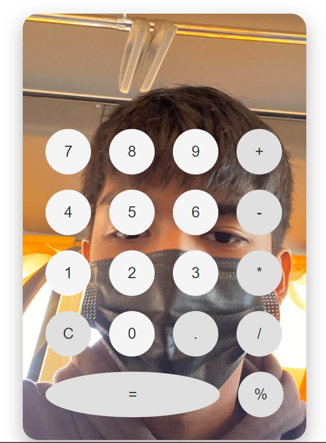

Projects
My first project was Personal Calculator.

Calculator
I don't have a picture of the first calculator I developed. That's why I used the second one I created.
- I used Pycharm for my first project.
- I faced many problems when working on my first project. It was not easy, but I kept motivated and determined, which is why I finished it.
- Basically, the calculator that I created can solve any problem or equation.